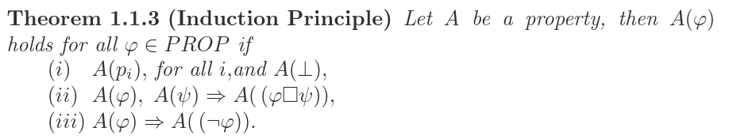

Logic deduction and formulation
Proposition logic
We can have:
- symbols
- connectives ()
Atomic proposition are symbols and .
Backus-Naur Form
BNF (or Backus-Naur Form) is a logical proposition written in the following way: 
Interpretation
Given a propositional formula G, let be the set of atoms which occur in it, an interpretation I of G is an assignment of truth values to Given a formula G and an interpretation I, if G is true under I, we say that I is a model for G, and we can write . If a formula is true for every interpretation is valid / a tautology, if it is false for every interpretation is inconsistent.
Normal form
Two kinds:
- CNF (conjunctive normal form) : where are conjunction of literals.
- DNF (disjunctive normal form) : where are disjunction of literals, and it is in NNF.
NNF: if negation appears only in front of atoms
Logical consequence
Given a set of formulas F and a formula G, G is a logical consequence of F if, for every possible interpretation, .
Natural deduction
\begin{align} \begin{prooftree} \AxiomC{A \; B} \RightLabel{(Introduction of and)} \UnaryInfC{A and B} \end{prooftree} \;\;\;\; \begin{prooftree} \AxiomC{A \; B} \RightLabel{(Elimination of and)} \UnaryInfC{A} \end{prooftree} \\ [A]\;\;\;\;\;\;\;\;\;\;\;\;\;\;\;\;\;\;\;\;\;\;\;\;\;\;\;\;\;\;\;\;\;\;\;\;\;\;\;\;\;\;\;\;\;\;\;\;\;\;\;\;\;\;\;\;\;\;\;\;\;\;\;\;\;\;\;\;\;\;\;\;\;\;\;\;\;\;\;\;\;\;\;\;\;\;\;\;\;\;\;\;\;\;\;\;\;\;\;\;\;\;\;\;\;\;\;\;\;\;\;\;\;\;\;\;\;\;\;\; \\ \begin{prooftree} \AxiomC{B} \RightLabel{(Introduction of implication)} \UnaryInfC{A -> B} \end{prooftree} \;\;\;\; \begin{prooftree} \AxiomC{A \; A -> B } \RightLabel{(eliminatio of implication)} \UnaryInfC{B} \end{prooftree} \\ [\neg A]\;\;\;\;\;\;\;\;\;\;\;\; \\ \begin{prooftree} \AxiomC{bottom} \RightLabel{(bottom)} \UnaryInfC{A} \end{prooftree} \;\;\;\;\;\;\;\;\;\;\;\;\;\;\;\;\;\;\;\;\;\;\;\;\;\;\;\;\;\;\;\;\;\;\;\;\;\;\;\;\;\;\;\;\;\;\;\;\;\;\;\;\;\;\;\; \begin{prooftree} \AxiomC{bottom} \RightLabel{(RAA)} \UnaryInfC{A} \end{prooftree} \end{align}
Resolution
Resolution works by contradiction: in order to prove that A is true, it proves that A is false.
First order logic
It is composed by a signature of a first-order language:
- P is a finite set of predicate symbols each with arity
- F is a finite set of function symbols each with arity
A well-formed formula is composed of atomic formulae, negation of formulae, conjunction/disjunction/implication of formulae and quantifiers. FOL also uses variables (with quantifiers or free) to denote things. A sentence (formulae connected together) can be:
- valid: true for every interpretation
- satisfiable: true for some interpretations
- falsifiable: not true for some interpretation
- unsatisfiable: always false An interpretation is the same as for Proposition logic
Herbrand Interpretation
A formula is valid if there exists a variable assignment that, for every interpretation, make the formula true.
Calculus
Negation normal form
As for Proposition logic, a formula is in NNF if:
- there is no implication
- in every sub-formula with , F is atomic